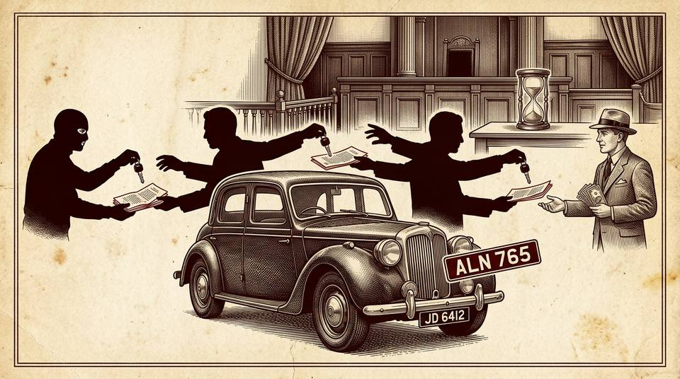

CASE 25 — DU CASE MATERIAL · SUB-TOPIC (a): SECTION 3
R.B. Policies at Lloyd's v. Butler
accrual of cause of actionunknown defendantstale demandsinnocent purchaseract of peaceconversion / detinue

Facts in Detail
- R.B. Policies at Lloyd's (the plaintiffs, underwriters) owned a motor car, registration JD 6412. It was stolen from them by some person or persons unknown on 27 June 1940.
- In January 1947 the car — now bearing registration ALN 765 — was found in the possession of Mr. Alfred Butler, having reached him through a line of intermediate purchasers during the previous seven years.
- The plaintiffs issued a writ on 16 July 1947 claiming return of the car as wrongfully detained by the defendant.
- Defence: the cause of action was barred by the Limitation Act, 1939 (UK), s. 2(1) — "no action shall be brought after the expiration of six years from the date on which the cause of action accrued"; the theft having occurred in June 1940, six years expired in June 1946, a year before the writ.
- The plaintiffs were owners; Butler was an innocent purchaser for good consideration and in good faith, years after the theft. The preliminary issue: on what date did the cause of action accrue?
Timeline
27-6-1940
Car stolen from the plaintiffs by person(s) unknown — conversion by the thief; identity never discovered.
1940–1946
Car passes through a line of intermediate purchasers; registration changes to ALN 765.
June 1946
Six years from the theft expire (s. 2(1), Limitation Act, 1939).
Jan 1947
Car found in Butler's possession — an innocent purchaser for value without notice.
16-7-1947
Writ issued claiming return of the car — more than six years after the theft, under two years within discovery.
1949
Held (Streatfeild, J.): cause of action accrued on the date of theft; the claim is statute-barred.
Issues
- On what date did the plaintiffs' cause of action accrue — the date of the theft (1940), or the date the car (and a suable defendant) was discovered (1947)?
- Does the fact that the thief was unknown and untraceable prevent the accrual of a cause of action against him?
- Could s. 26 of the 1939 Act (fraudulent concealment) or the principle of discovering the wrong postpone the running of time?
- What is the policy of a limitation statute in a contest between an owner and an innocent purchaser?
Arguments for the Plaintiffs (R.B. Policies at Lloyd's)
- A cause of action requires a person capable of suing and a person who can be sued — the thief being unknown, no action could be brought in 1940, so the cause of action cannot have accrued then.
- Only in January 1947 was there an identifiable defendant (Butler) in possession — limitation should run from discovery of the wrong and the wrongdoer.
- It would be unjust to deprive the true owner of property merely because the thief concealed his identity.
Arguments for the Defendant (Butler)
- The theft itself was a complete conversion the moment it occurred — every ingredient of the cause of action existed in June 1940.
- S. 3(1) of the 1939 Act: subsequent conversions by the chain of purchasers are comprehended in the original accrual — no action lies after six years from the original cause of action.
- S. 26 (fraudulent concealment) is a special, limited exception — and it postpones the running of time only until fraud is or could be discovered; it does not postpone accrual for a merely unknown thief.
- The Act protects innocent purchasers against stale demands — that is its policy.
The Decision
Preliminary point decided in favour of the defendant: the claim was barred by limitation. The cause of action accrued in June 1940, when the car was stolen.
- Accrual: "A cause of action cannot accrue unless there be a person in existence capable of suing and another person in existence who can be sued" — the thief was in existence, though not traceable: "It was, no doubt, a misfortune to the plaintiffs that they could not find a defendant whose name they could insert in a writ, but the fact remains that every other ingredient of the cause of action was present."
- S. 26 is the sole postponement: it says time "shall not begin to run" until discovery of fraud — it does not say the cause of action accrues afresh on discovery; absent pleaded fraud, time runs from the theft notwithstanding ignorance of the thief's identity.
- The watch illustration: "It would lead to appalling results if someone, having lost a watch and discovered it fifty or sixty years later in the possession of a wholly innocent person who had bought it many years previously, was able to bring an action for its recovery merely because he did not know who the thief was."
- Policy — the twin principles: (i) "those who go to sleep on their claims should not be assisted by the Courts in recovering their property"; (ii) equally, "there shall be an end of these matters... protection against stale demands" — quoting Best, C.J. in A'Court v. Cross: the Act is "an act of peace"; "long dormant claims have often more cruelty than justice in them".
- A claim made seven-eight years after the loss, against a perfectly innocent holder who gave value without knowing of the theft, "does not seem just" — the Act exists to prevent precisely such injustices.
PRINCIPLE EVOLVED
- A cause of action accrues when all its ingredients exist — the existence (not the identity or traceability) of a wrongdoer suffices; ignorance of the defendant's name does not postpone accrual.
- Limitation statutes are acts of peace designed to bury stale demands, protect defendants from lost evidence, and shield innocent purchasers — dormancy is cruelty, not justice.
- Postponement of limitation is exceptional (fraudulent concealment-type provisions) and must be strictly construed — it delays the running of time, it does not re-create the cause of action.
- Owners must be diligent: he who sleeps on his claim forfeits the court's assistance — the creditor's remedy dies while the duty to be alert lives.